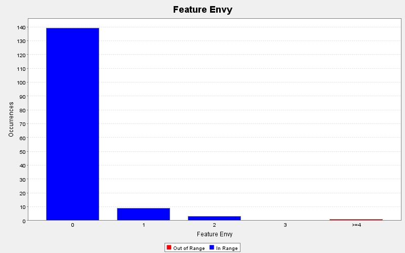

Produced by State Of Flow Eclipse Metrics on Sun Apr 14 20:24:37 EDT 2013
|  |
|
| CC | FE | LOCm | NLS | NOL | NOP | NOS | Line | Method | Type | Package |
|---|---|---|---|---|---|---|---|---|---|---|
| 4 | 0 | - | 1 | 3 | 1 | 10 | 353 | actionPerformed(java.awt.event.ActionEvent) | TwitterGUI$(anonymous) | view |
| 1 | 0 | - | 0 | 1 | 1 | 4 | 842 | mouseClicked(java.awt.event.MouseEvent) | TwitterGUI$(anonymous) | view |
| 2 | - | 19 | 0 | 2 | 1 | 9 | 19 | main(java.lang.String[]) | GUITest | test |
| 1 | - | - | 0 | 1 | 1 | 1 | 27 | paintComponent(java.awt.Graphics) | GUITest$(anonymous) | test |
| 1 | - | 7 | 0 | 1 | 1 | 0 | 261 | main(java.lang.String[]) | TwitterGUI | view |
Produced by State Of Flow Eclipse Metrics on Sun Apr 14 20:24:37 EDT 2013